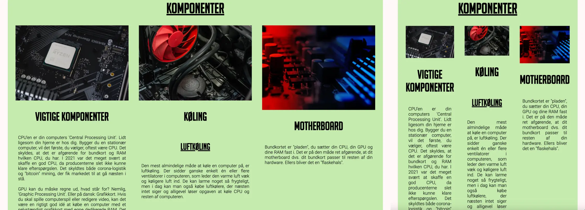
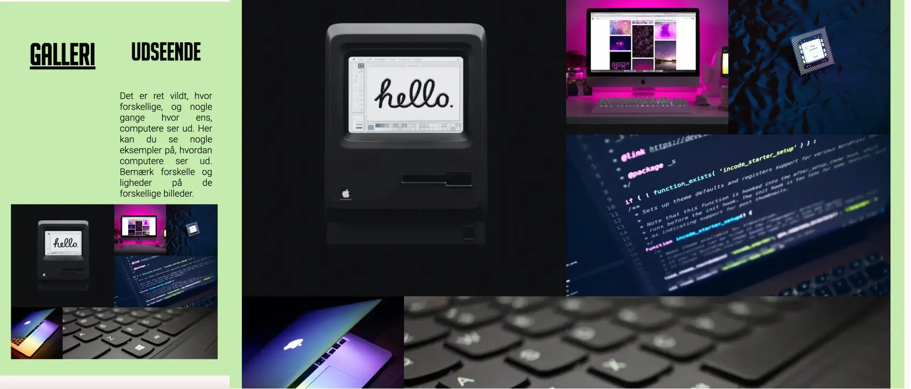
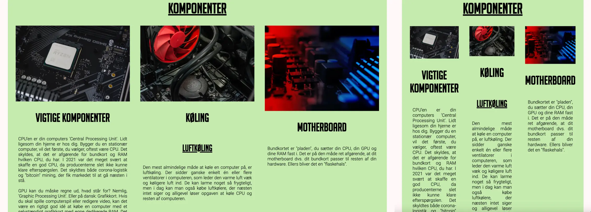
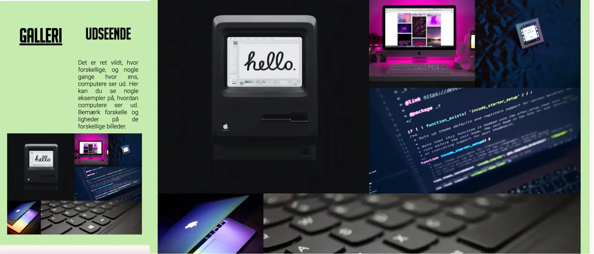
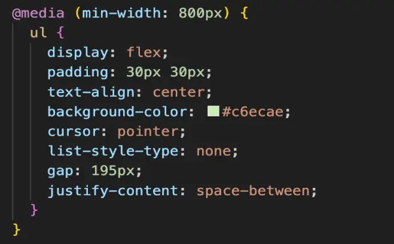
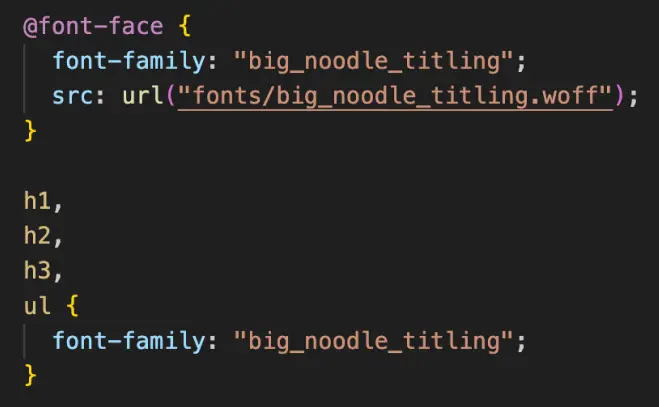
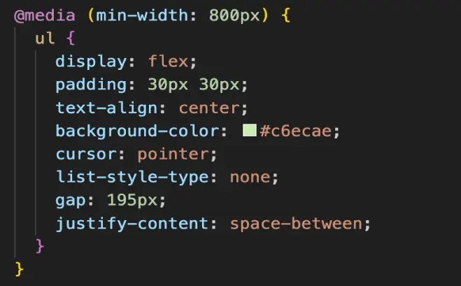
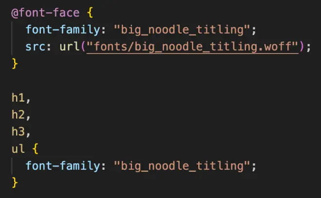

TEMA 2
GRUNDLÆGGENDE WEB
I tema 2 lærte vi at sætte websider op i html og CSS og fik den grundlæggende viden indenfor hvordan man laver websider. Vi lærte hvordan man bruger Filezilla for at uploade filer på nettet. Og hvordan man laver et responsiv website med at bruge grids, flexbox og Media queries. Dereudover lærte vi om designprincipper og typgrafi. Vi lærte at bruge Figma og hvordan man laver styletiles, wireframes og moodboards i Figma.
02.01.02 Studiestartsprøve
Vores første tema opgave var studiestartsprøven. I denne opgave skulle vi lave et responsivt website ud fra givne layoutdiagrammer og wireframes. Vi skulle strukture billeder og tekst og bruge grids og flexbox for vores løsning. Vi skulle også style websiten med at bruge CSS og finde fonter, farver og bruge margin og padding.
Min website:


 



Kodning
 



Konklusion:
I denne tema lærte jeg hvordan jeg kan bruge grid for at style mit website. Jeg lærte også hvordan jeg kan finde og installera fonts. Og hvordan jeg kan bruge media queries for at lave responsivt website.